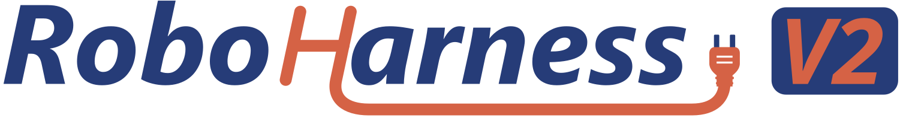
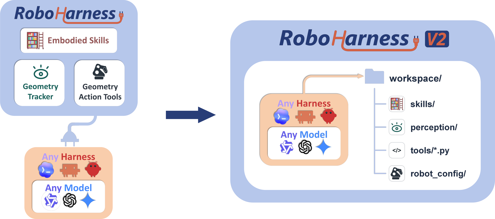
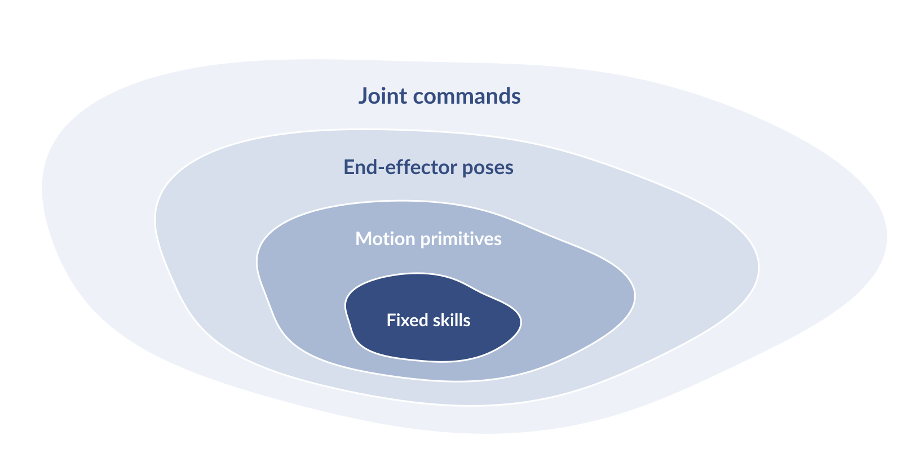
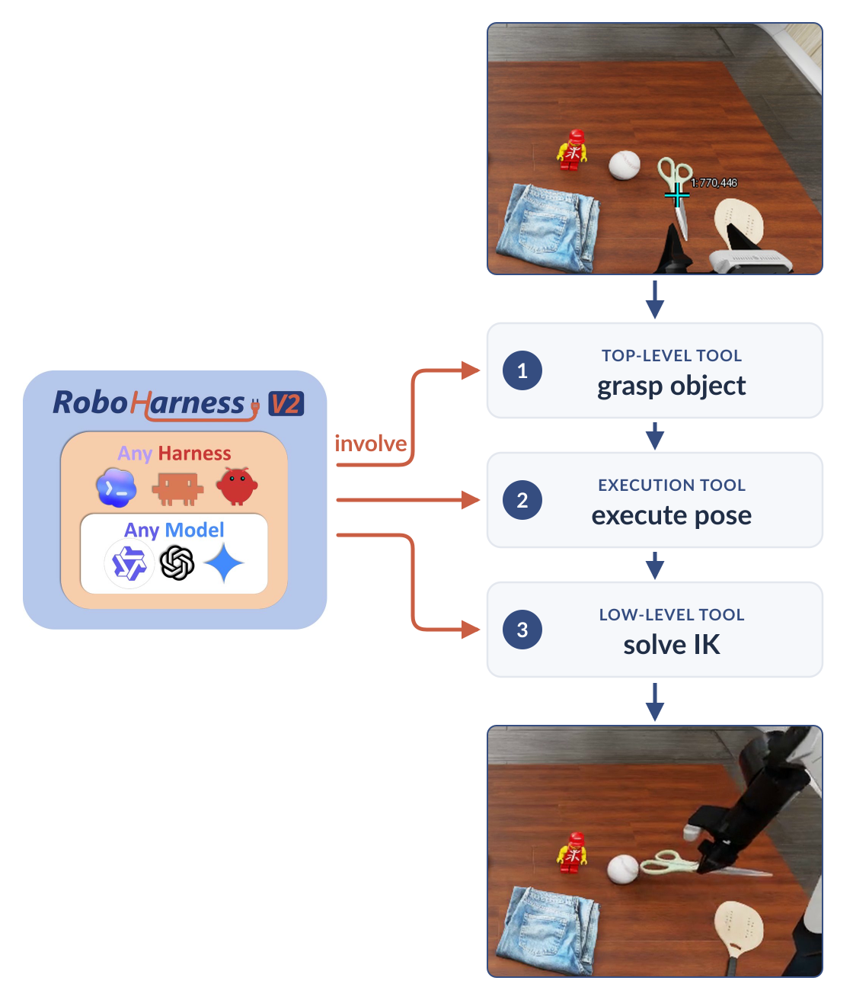
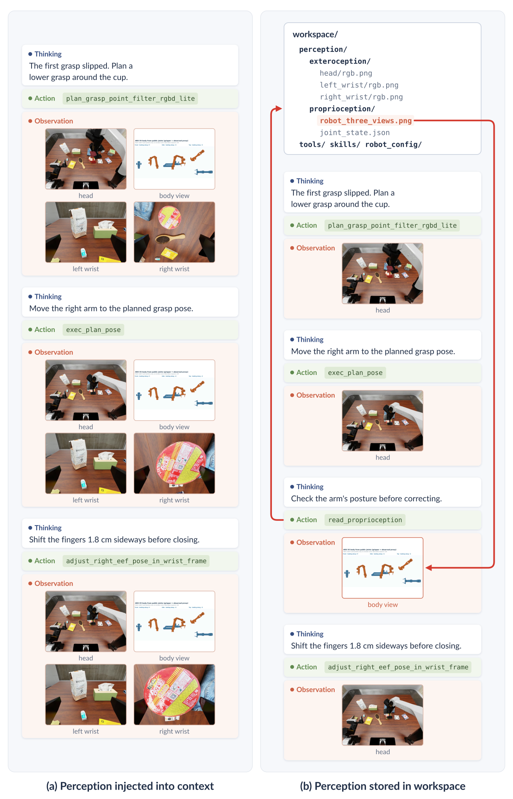
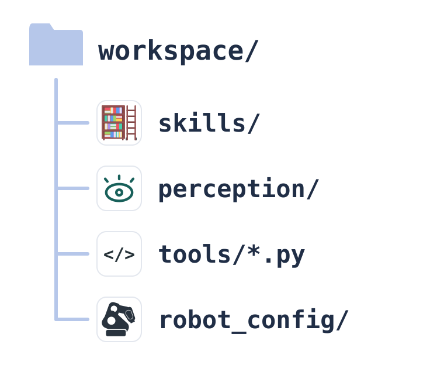

A robot workspace where the coding agent can edit and execute any action function, or write its own scripts to control the joints directly.
一个机器人工作空间：coding agent 可以编辑和执行任何动作函数，也可以自己写脚本直接控制关节。
A robot only needs one hard contract: joint commands. Everything else a coding agent needs — tools that translate intent into joint commands, live perception, and knowledge about the task — we put into a single directory, and the agent is started inside it. The workspace is the harness. Because it is made only of Python and files, any coding agent can use it without adaptation, one agent can move between robots by moving between directories, and the harness can be edited while the agent is being trained.
机器人只需要一条硬契约：关节指令。coding agent 所需的其他一切，包括把意图翻译成关节指令的工具、实时感知，以及关于任务的知识，我们都放进同一个目录，并让 agent 直接在这个目录中启动。这个工作空间本身就是 harness。由于它只由 Python 和文件构成，任何 coding agent 都可以不经适配直接使用；同一个 agent 换一个目录就能换一台机器人；harness 也可以在 agent 训练期间持续修改。

Let a coding agent control a robot. What is the best harness to put between them?
让一个 coding agent 控制一台机器人，最好的 harness 设计是什么？
Start from the robot. Whatever software runs on top of it, a robot ultimately understands one thing: commands to its joints — arm angles, base velocities, gripper forces. That command space can already express every motion the body is capable of. Any feature that replaces it, whether a grasp primitive, an end-effector API, or a fixed menu of skills, can only narrow what the agent is allowed to do. The more refined such a tool is, the easier it is for the agent to use, and the smaller the set of motions it can still reach. As models become more capable, such features turn from help into a ceiling. So the most primitive action, and the only contract a harness should enforce, is the joint command.
先从机器人说起。无论上层运行什么软件，机器人最终只理解一样东西：发给关节的指令，包括手臂角度、底盘速度和夹爪力。这个指令空间本身已经能表达这具身体能做出的一切动作。任何取代它的功能，无论是抓取原语、末端执行器 API，还是一份固定的技能清单，都只会缩小 agent 被允许做的事。工具设计得越精密，agent 用起来越方便，它还能触及的动作也越少。模型越强，这些功能就越会从帮助变成天花板。因此，最原始的动作、也是 harness 唯一应当强制的契约，就是关节指令。

Yet today's agents cannot drive joints well on their own. Turning "grasp the scissors at this pixel" into a sequence of joint angles requires depth, kinematics, collision checks and timing — work that should not be redone in every reply. The agent needs tools that translate intent at different levels into joint commands. The question is what form those tools should take. A coding agent is, above all, good at code: reading it, running it, changing it. So the tools should be ordinary Python files that the agent can open and understand, call from a shell, and rewrite when they fall short. A tool written this way is a ladder, not a fence. The agent may climb it, inspect how it was built, modify it, or step off and command the joints directly.
然而，今天的 agent 还无法独立地把关节驱动好。把“在这个像素位置抓住剪刀”变成一串关节角，需要深度、运动学、碰撞检查和时序控制，这些工作不应该在每一次回复中重新做一遍。agent 需要能把不同层次的意图翻译成关节指令的工具。问题在于这些工具应该采取什么形式。coding agent 最擅长的就是代码：读代码、跑代码、改代码。所以这些工具应该是普通的 Python 文件：agent 能打开读懂，能在 shell 中调用，不够用时能直接改写。以这种方式写成的工具是一架梯子，而不是一道围墙。agent 可以顺着它往上爬，可以查看它是怎么搭的，可以修改它，也可以离开它，直接下达关节指令。
Figure 2 follows one such tool, a grasp, down to the joints. Because every layer is readable code, the agent is not limited to calling the top: it can adjust a grasp pose that looks wrong, move a trajectory away from a collision, nudge the hand when it is slightly off, or free a stuck joint by commanding it directly.
图 2 顺着一个抓取工具一路追到关节。由于每一层都是可读的代码，agent 不必只调用最上层：抓取位姿看起来不对，可以调整；轨迹可能碰撞，可以让开；手的位置略有偏差，可以微调；关节卡住了，可以直接下达关节指令把它解脱出来。

To act, the agent must also see. A running robot produces a continuous stream of perception: head and wrist images, depth, tracked points, measured joint states. Sometimes the agent needs all of it; often it needs none. Pushing every frame into the model's context would fill it with data that is rarely read. Instead, the stream should land in the same place as the tools — on disk, as files — and the agent reads what it needs, when it needs it. Each folder plays the role of a ROS topic: the robot keeps publishing the latest message, and the agent subscribes only at the moment it wants to look.
要行动，agent 还必须能看见。运行中的机器人会产生连续的感知流：头部与手腕相机图像、深度、跟踪点、实测关节状态。有时 agent 全都需要，更多时候一样都不需要。把每一帧都推进模型上下文，只会让上下文被很少被读取的数据占满。更好的做法是让感知流和工具落在同一个地方，也就是以文件的形式存在磁盘上，由 agent 在需要时读取所需内容。每个文件夹就相当于 ROS 中的一个 topic：机器人持续发布最新的消息，agent 只在想看的那一刻去订阅。
Once tools, perception and instructions are all files, the agent can improve the harness it works in. A tool that falls short can be edited. A lesson from a failed attempt can be written down for next time. A calculation it keeps repeating can become a helper script. Humans contribute in the same way, distilling what they know about the body and the task into manuals and skills. None of this needs a special mechanism: reading and writing files is what a coding agent already does best. The result is a robot harness native to coding agents, one that can grow with use rather than staying fixed at whatever its authors anticipated.
既然工具、感知和说明都是文件，agent 就可以改进自己所处的 harness：工具不好用，可以改；失败中得到的教训，可以记下来留给下一次；反复做的计算，可以写成辅助脚本。人类也以同样的方式参与，把自己对这具身体和任务的理解凝练成手册和技能。这一切都不需要专门的机制：读写文件本来就是 coding agent 最擅长的事。由此得到的是一套为 coding agent 原生设计的机器人 harness，它可以随着使用不断成长，而不是停留在作者最初预想的样子。
Put together, the answer is not a set of tools handed to the agent, but a place for the agent to work:
综合起来，答案不是交给 agent 的一组工具，而是一个让 agent 在其中工作的地方：

RoboHarness V2 is a robot workspace for coding agents.
RoboHarness V2 是为 coding agent 打造的机器人工作空间。
RoboHarness V2 implements this idea as one self-contained directory per robot. We currently provide two: R1_pro, a mobile bimanual robot evaluated in BEHAVIOR, and ARX_X5, a fixed dual-arm robot evaluated in RoboDojo. Each directory carries its own Python interpreter and libraries, so it can be copied as a whole, and every session starts from a fresh copy. Below we walk through R1_pro in the order an agent meets it.
RoboHarness V2 把这一思路实现为每台机器人对应一个自包含的目录。目前提供两个：R1_pro，一台在 BEHAVIOR 中评测的移动双臂机器人；ARX_X5，一台在 RoboDojo 中评测的固定双臂机器人。每个目录自带 Python 解释器和依赖库，可以整体复制，每个会话都从一份全新的副本开始。下面按 agent 接触它的顺序，介绍 R1_pro 的结构。
skills/ — accumulated knowledge. Task procedures written as Markdown, such as picking up an object, placing it in a container, or opening doors and drawers, plus a baseline skill that is always active. An agent activates a skill by name and reads its instructions and exit conditions. Since skills, tools and instructions are all files, the agent may also write its own.
skills/：积累的知识。 以 Markdown 编写的任务流程，例如拾取物体、放入容器、开门开抽屉，另有一个始终激活的基础技能。agent 按名称激活技能，并阅读其中的步骤和退出条件。由于技能、工具和说明都是文件，agent 也可以自己编写。
perception/ — the live senses. The latest head and wrist RGB images, depth previews, tracked points and measured joint states, all as files. perception/latest.json binds them to one observation sequence. A posture image of the robot's body is rendered only when the agent asks for it.
perception/：实时感知。 最新的头部与手腕 RGB 图像、深度预览、跟踪点和实测关节状态，全部以文件形式存在。perception/latest.json 把它们绑定到同一个观测序号。机器人身体的姿态渲染图只在 agent 主动请求时才生成。
tools/ — the ladder. One Python file per tool, about thirty in total: capturing cameras, planning a grasp from a clicked pixel, executing a planned pose, moving the base, adjusting the end-effector in head or wrist frame, opening and closing grippers. Each file begins with a physical overview and an input schema (--schema), followed by its full algorithm. Shared code lives in tools/util/, equally readable. Every tool ends the same way: it yields joint commands to the evaluator. There is no tool server in between.
tools/：梯子。 每个工具一个 Python 文件，共约三十个，涵盖相机采集、根据点击像素规划抓取、执行规划好的位姿、移动底盘、在头部或手腕坐标系中调整末端执行器、开合夹爪等。每个文件开头是物理层面的概述和输入 schema（--schema），后面是完整的算法实现。共享代码放在 tools/util/，同样可读。所有工具的终点都一样：把关节指令交给 evaluator。中间没有任何工具服务器。
robot_config/ — the body. The robot's URDF and meshes; a joint manual giving each joint's axis, limits and controller index; and, for every joint, an illustration of its −90°, 0° and +90° poses. control.py exposes the raw interface: a 27-value controller command for R1 Pro, and 14 scalars (six joints and a gripper per arm) for the X5. This is the one hard contract.
robot_config/：身体。 包括机器人的 URDF 和网格模型；一份关节手册，列出每个关节的转轴、限位和控制器索引；以及每个关节在 −90°、0°、+90° 三个姿态下的示意图。control.py 暴露原始接口：R1 Pro 是 27 维的控制器指令，X5 是 14 个标量（每条手臂 6 个关节加 1 个夹爪）。这就是唯一的硬契约。

Two more pieces sit beside these folders. AGENTS.md is the first file an agent reads: it explains how to call tools, how image coordinates are defined, and that the newest observation always describes the current physical state. tool_call_history/ keeps one small folder per call with its input, its result and the images it returned; click calls also keep a crosshair on the original image, so the agent can verify where it actually pointed. What the workspace leaves out matters as much. There is no MCP server, no model-specific bridge, no custom context manager, and no image resizing. Physics, scene data and scoring stay in a separate evaluator process that only receives joint commands. The agent sees the robot, never the simulator.
这些文件夹旁边还有两样东西。AGENTS.md 是 agent 读到的第一个文件，说明如何调用工具、图像坐标如何定义，并强调最新的观测始终代表当前的物理状态。tool_call_history/ 为每次调用保存一个小文件夹，包含输入、结果和返回的图像；点击类调用还会在原图上标出十字准星，方便 agent 核对自己实际点在了哪里。工作空间刻意没有包含的东西同样重要：没有 MCP 服务器，没有针对特定模型的桥接层，没有自定义的上下文管理器，也不对图像做缩放。物理仿真、场景数据和评分都留在一个独立的 evaluator 进程中，它只接收关节指令。agent 看到的是机器人，而不是模拟器。
We did not set out to build the following properties. They follow from the design above.
以下这些性质并不是我们刻意追求的目标，而是上述设计自然带来的结果。
Any coding agent, without adaptation. The workspace asks only for what every coding agent already has: a shell to run Python and a way to read files and images. We have run the same directories under Claude Code, Codex and Pi. The only instruction that differs between them is which native command opens an image: Read in Claude Code, view_image in Codex. Swapping the agent does not touch the harness.
任何 coding agent 都能直接使用。 工作空间只要求每个 coding agent 本来就具备的能力：一个能运行 Python 的 shell，以及读取文件和图像的方法。我们已经在 Claude Code、Codex 和 Pi 下运行过同一批目录，它们之间唯一不同的指令，是用哪个原生命令打开图像：Claude Code 用 Read，Codex 用 view_image。更换 agent 不需要改动 harness。
One brain, many robots. A robot is a directory defined by its own joint contract. Moving an agent from R1 Pro to the X5 means starting it in a different directory: the body description, tools and senses change, while the way of working (read, run, look, decide) does not. The same structure applies to any robot that exposes joint commands.
一个大脑，多台机器人。 一台机器人就是一个由自身关节契约定义的目录。让 agent 从 R1 Pro 换到 X5，只需要让它在另一个目录中启动：身体描述、工具和感知随之改变，而工作方式（读、跑、看、决策）不变。同样的结构适用于任何提供关节指令接口的机器人。
Edit the harness while training the agent. The agent's interface — a shell and files — and the robot's contract — joint commands — are both fixed. Everything between them is files that may change: a tool can be rewritten, a skill added, an instruction clarified. Such edits change the environment the agent works in, not the interface it acts through, so trajectories collected with an earlier version of the harness remain valid interactions. Improving the harness and training the agent can therefore proceed at the same time.
训练 agent 的同时修改 harness。 agent 的接口（shell 和文件）与机器人的契约（关节指令）都是固定的，二者之间的一切都是可以改动的文件：工具可以重写，技能可以增加，说明可以完善。这些修改改变的是 agent 所处的环境，而不是它行动所用的接口，因此在旧版 harness 上采集的轨迹依然是有效的交互记录。改进 harness 和训练 agent 可以同时进行。